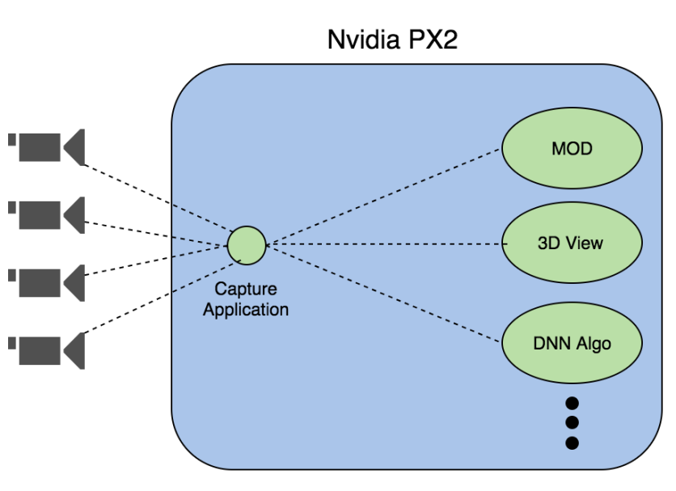
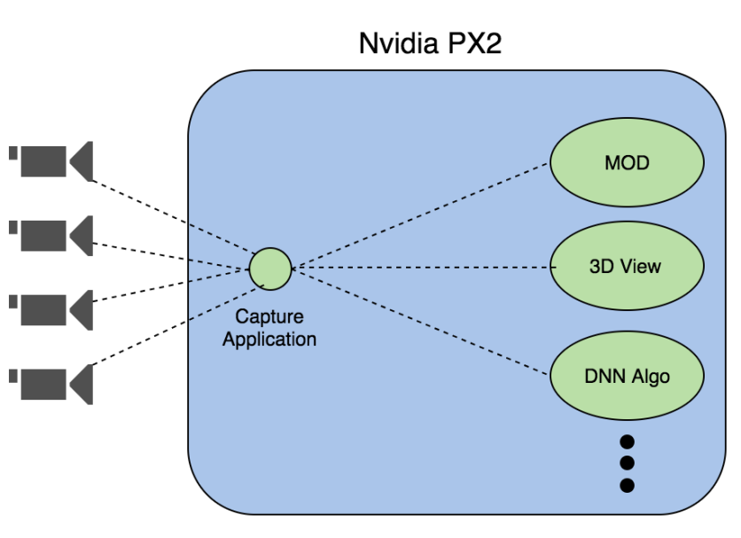
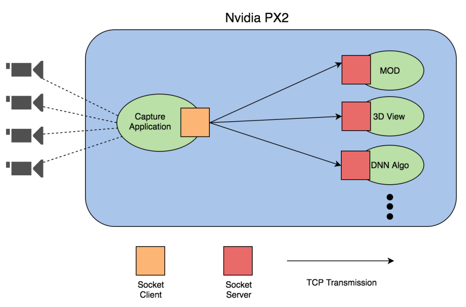
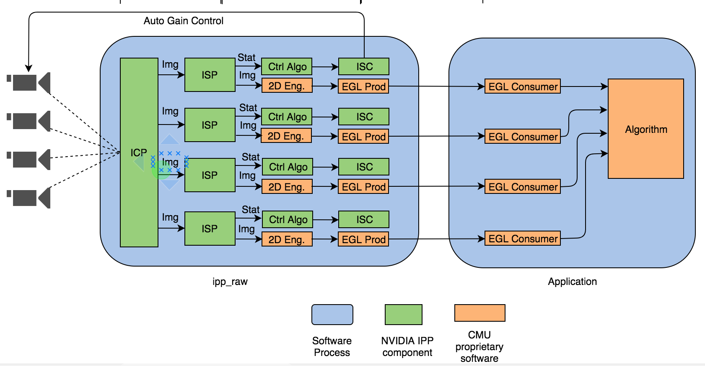

NVIDIA PX2 camera streaming framework
 Aug 22 2020

Aug 22 2020

Aug 22 2020
The MOD stands for Motion Object Detection. The 3D view is an application which uses images from 4 cameras to stitch the surround view of around a car. The DNN is the deep neuron network algorithm, in which we do some pedestrian recognition or road sign recognition.
In this project, the three algorithms are existing applications, and Nvidia also provides some sample code to demo how to capture camera streaming on their platform. Therefore, my job is to design a framework which is able to capture the camera streaming and transfer those image data to other applications efficiently.
Here are two questions:
1. Why don’t we just combine the capture application and other applications together, and the share the same buffer pointer?
Ans: This is because we want to modulize every component in our system and thus increase the maintainability and extensibility.
2. How do we define efficiency?
Ans: Typically, we want to reduce the end-to-end latency to no more than 100 ms in the autonomous vehicle field. This will also be a goal and measurement in our later discussion.
My first approach was to use socket to transfer the images. Each application stuck in the recv socket api to keep polling from that socket. The capturing application is responsible to send the same image buffer to different servers as a client. Just like below diagram.
The good thing about this approach is that socket programming is a general framework, which gives us more portability if we want to migrate to other platforms in the future. We also have enough knowledge to fast prototyping it. However, the downside of this approach is performance. In this approach, there are too many memory copies and thus our performance is really bad.
To tackle this issue, I did more study and turned into another image sharing framework called EGL. In this framework, we are able to share the same image buffer pointer by just exchanging the buffer pointer. This largely increases performance. Furthermore, I looked into the NVIDIA image pipeline solution, which could be used to convert the color format with HW based solution. This also enhanced our performance. With these two improvements, I managed to reduce the end-to-end latency from 100ms to 10ms. Below is the overall system architecture diagram.
In this diagram, I used NVDIA 2D Engine (orange boxes) to do the resizing/color conversion so that I can reduce more CPU time and end-to-end latency. Plus, I leveraged NVDIA sample codes to create an image sharing pipeline by using EGL. EGL producers and consumers can transmit image buffers across different processes without memory copy. The only time we need to do a memory copy is when the algorithm we use would modify the image buffer. With this architecture, I reduced the end-to-end latency from 100ms to 10ms.